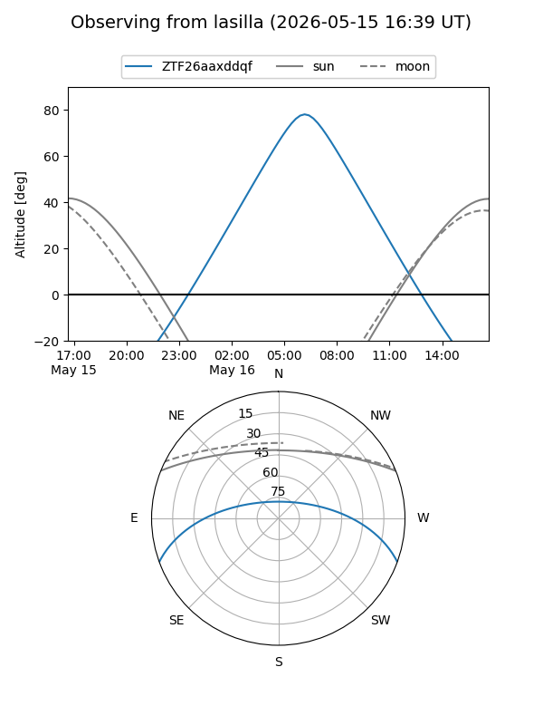
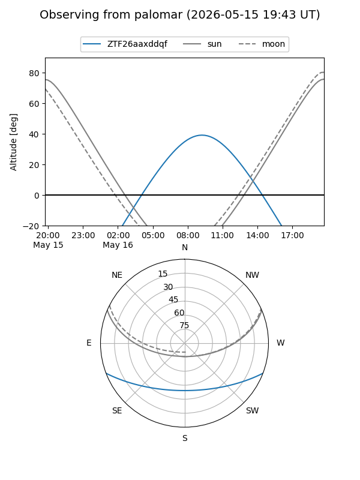

ZTF26aaxddqf
Target ZTF26aaxddqf at 2026-05-16 09:54
Aliases and brokers:
FINK: link
Lasair: link
ALeRCE: link
alt names
ZTF26aaxddqf (ztf,fink_ztf)
Coordinates:
equatorial (ra, dec) = 255.3226,-17.36663
equatorial (HMS+DMS) = 17:01:17.42,-17:21:59.87
galactic (l, b) = (4.0490,+14.86830)
Flags:
Photometry:
last ztfg=19.78
1 ztfg detections
Lightcurve
Visibility


Additional plots